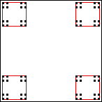

| Here is the fractal of the fifth example, but
modified so each piece is scaled by r = 1/4. To emphasize the scaling, each piece is surrounded
by the unit square, scaled by r = 1/4. |
| What is the similarity dimension of this fractal? Applying the
formula ds = Log(N)/Log(1/r), we obtain |
| ds = Log(4)/Log(4) = 1. |
| This is the dimension of a line, yet this fractal doesn't
look at all like a line. |
| However, note the formula for ds does
not depend on the placement of the pieces, only on their number and size. |
| So suppose
we move some of the pieces (without introducing any overlaps). |
| Can appropriate
repositioning of the pieces make this dimension calculation match our intuitions?
Let us see. |
|
 |
| Click the picture to animate. |
|